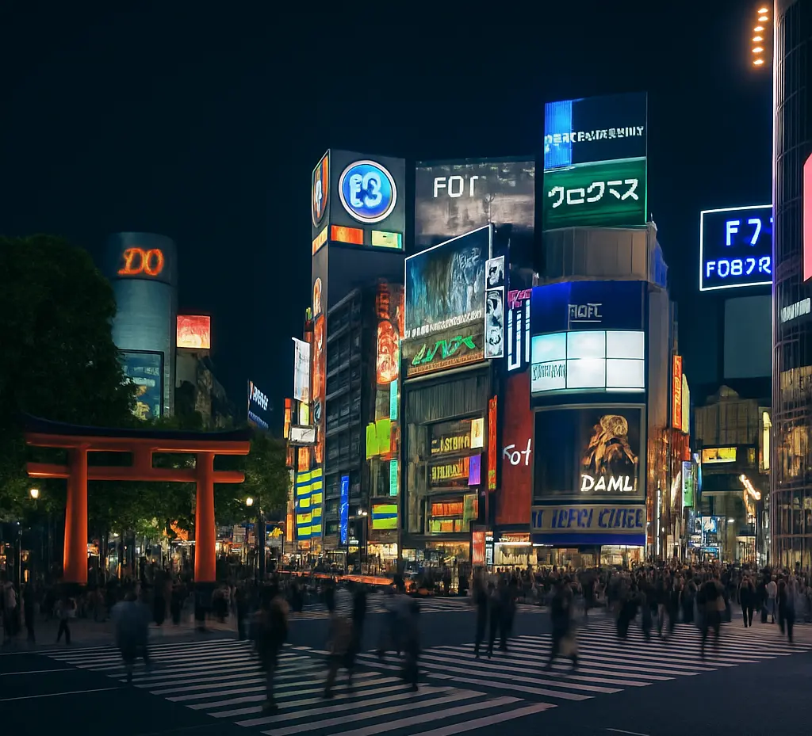

Neon chaos, quiet temples, vending machines that sell everything (yes, even soup), and the cleanest streets I’ve ever seen.
Spent the morning lost in the energy of Shibuya Crossing and the evening under the cherry blossoms in Ueno Park 🌸
Tried sushi that basically melted in my mouth at Tsukiji Market 🍣 and stumbled into a cat café I didn’t even plan for (I stayed an hour).
This city is wild, beautiful, and full of surprises. Can’t wait to share more soon 💌✨